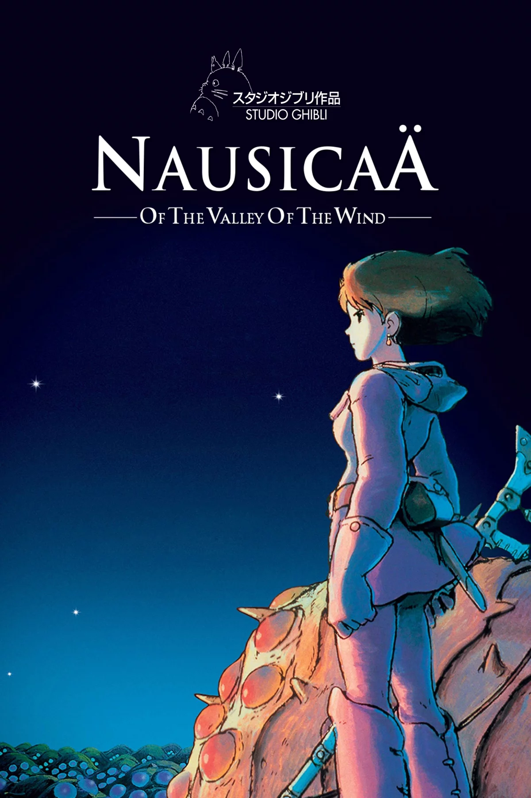

Dramat Survivalowy
Nausicaä Of The Valley Of The Wind
- Liczba odcinków: 1
- Studio: Studio Ghibli
- Rok produkcji: 1984
- Ocena: 9.0/10
Nausicaä z Doliny Wiatru to kamień milowy światowej animacji w reżyserii Hayao Miyazakiego. Choć film powstał tuż przed założeniem legendarnego Studia Ghibli, uznaje się go za jego pierwsze, fundamentalne dzieło, łączące postapokalipsę, epickie fantasy oraz dramat ekologiczny.
Fabuła przenosi nas tysiąc lat po globalnym kataklizmie. Większość Ziemi została pochłonięta przez Toksyczne Morze – las pełen trujących zarodników i gigantycznych owadów, na czele z potężnymi istotami Ohmu. Jednym z niewielu bezpiecznych miejsc jest Dolina Wiatru, rządzona przez nastoletnią księżniczkę Nausicaä.
Dziewczyna posiada niezwykły dar komunikacji z naturą i w tajemnicy szuka sposobu na pokojowe współistnienie ludzi i lasu. Spokój Doliny kończy się, gdy brutalne imperium Tolmekii zamierza ożywić dawną broń masowej zagłady, by doszczętnie spalić toksyczną biosferę. Ich działania wywołują furię owadów i doprowadzają do wojny, w którą zostaje wciągnięte królestwo bohaterki.
Nausicaä musi zrobić wszystko, by powstrzymać zaślepioną nienawiścią ludzkość przed ponownym zniszczeniem świata.
Film zachwyca piękną, ręcznie rysowaną animacją, projektami maszyn oraz hipnotyzującą muzyką Joe Hisaishiego. To ponadczasowe, głęboko pacyfistyczne studium relacji człowieka z naturą.
